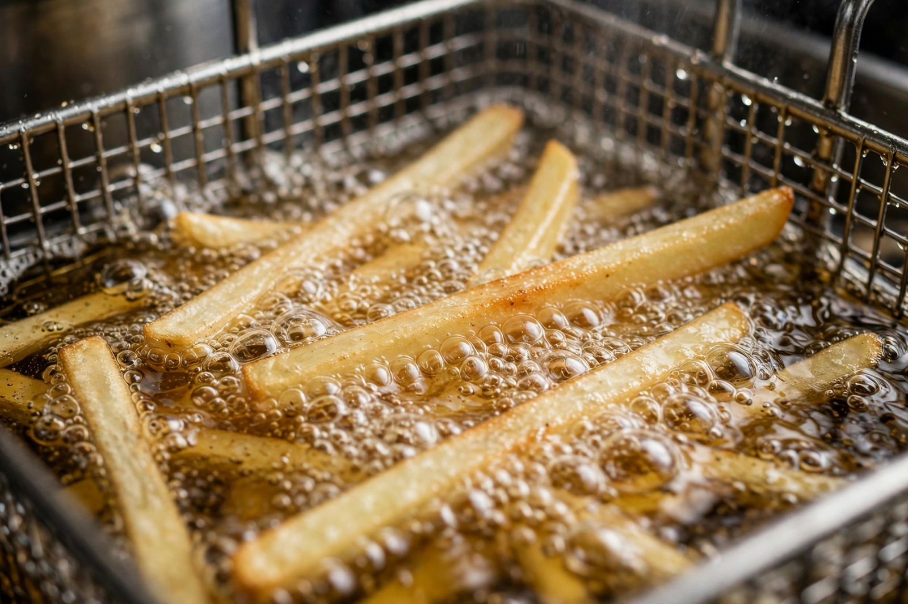

Deep frying
From Wikipedia, the free encyclopedia

Deep frying is a cooking method in which food is submerged in hot fat or oil, typically at 175–190 °C (350–375 °F). The intense heat cooks food rapidly and dehydrates the surface, giving the crisp, golden crust characteristic of French fries, fried chicken, tempura, doughnuts and spring rolls. Items are often coated in batter or breadcrumbs first to protect the interior and add crunch.
Although associated with fast food, deep frying is an old and global technique: ancient Romans fried in olive oil, Japanese tempura was introduced by Portuguese missionaries in the 16th century, and fried doughs appear in nearly every cuisine. Correctly executed, deep-fried food absorbs surprisingly little oil, because escaping steam pushes oil away from the surface; oil that is too cool produces greasy results.
Technique
Food should be dry before frying (water causes violent splattering), cooked in small batches so the oil temperature does not crash, drained on racks or paper, and salted immediately. Oil degrades with reuse: darkening, foaming or acrid smells signal it should be discarded. Home deep fryers have thermostats; stovetop frying demands care since oil can ignite if overheated.
Oils
Oils with high smoke points are preferred — refined peanut, sunflower, canola and rice-bran oils are common, while lard and beef tallow are traditional for fries and fish and chips. Flavourful unrefined oils such as extra-virgin olive oil are generally reserved for shallow frying.
Dishes and health
Iconic deep-fried dishes include Belgian frites, Japanese tempura and tonkatsu, Indian pakora and samosas, Scottish deep-fried Mars bars (a novelty), and American corn dogs. Nutritionally, deep frying adds fat and calories, and overheated or repeatedly reused oils can form undesirable compounds, so the technique is usually recommended in moderation.